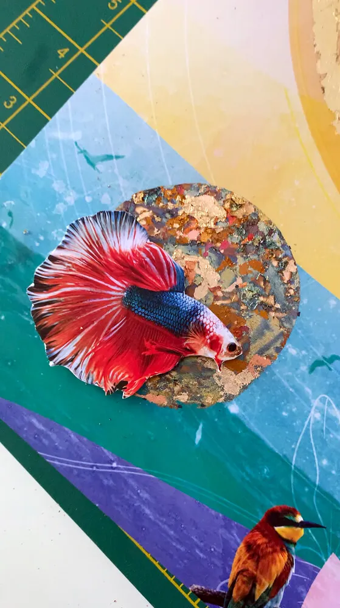
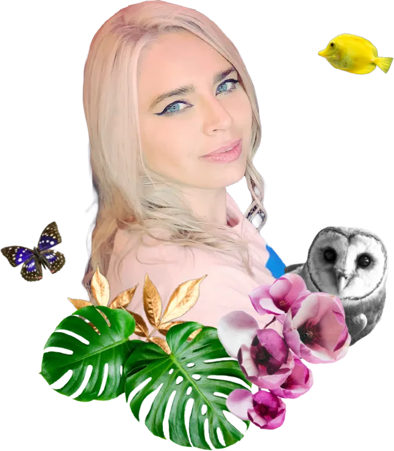
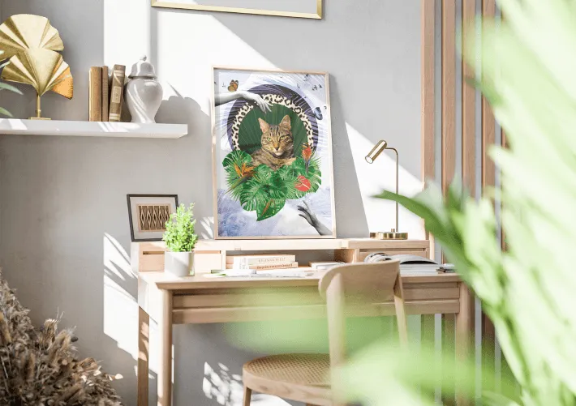
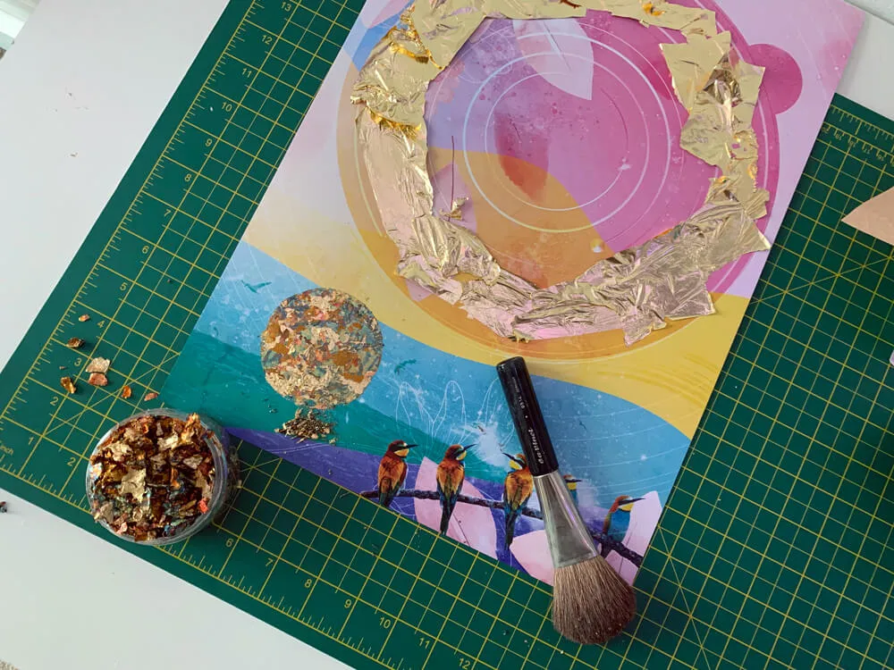
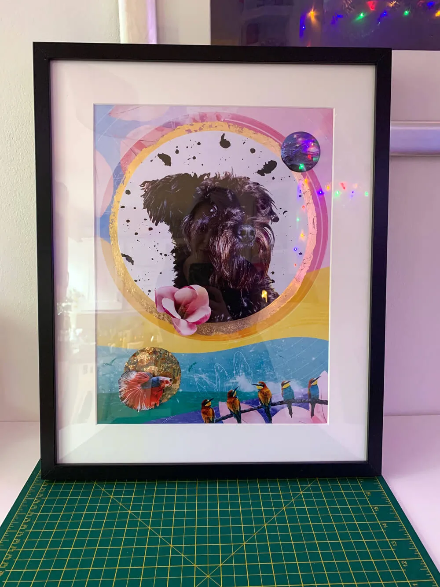
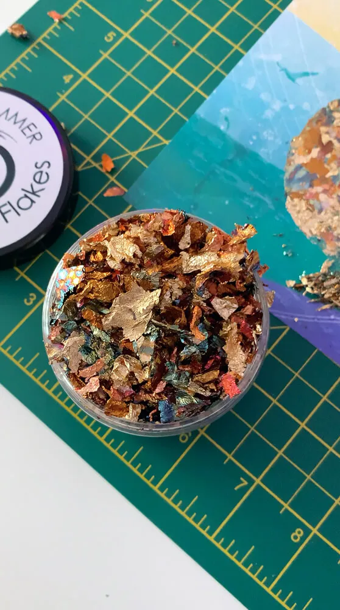
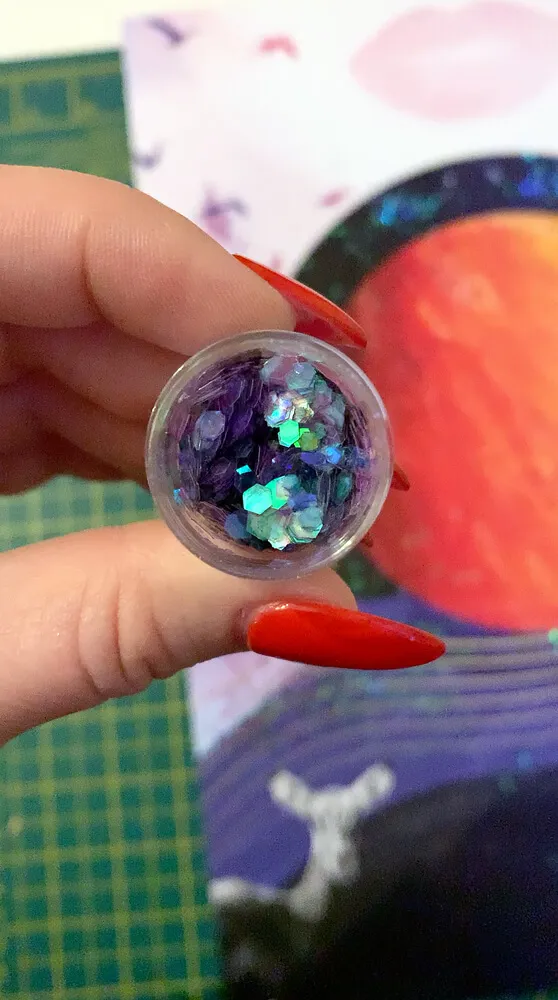
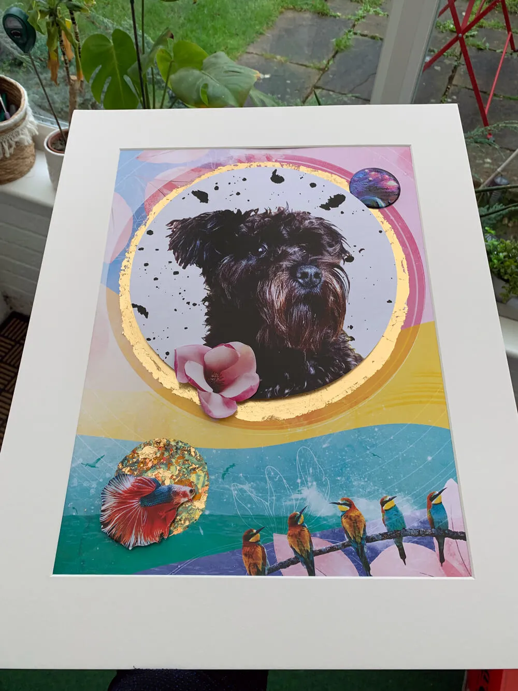
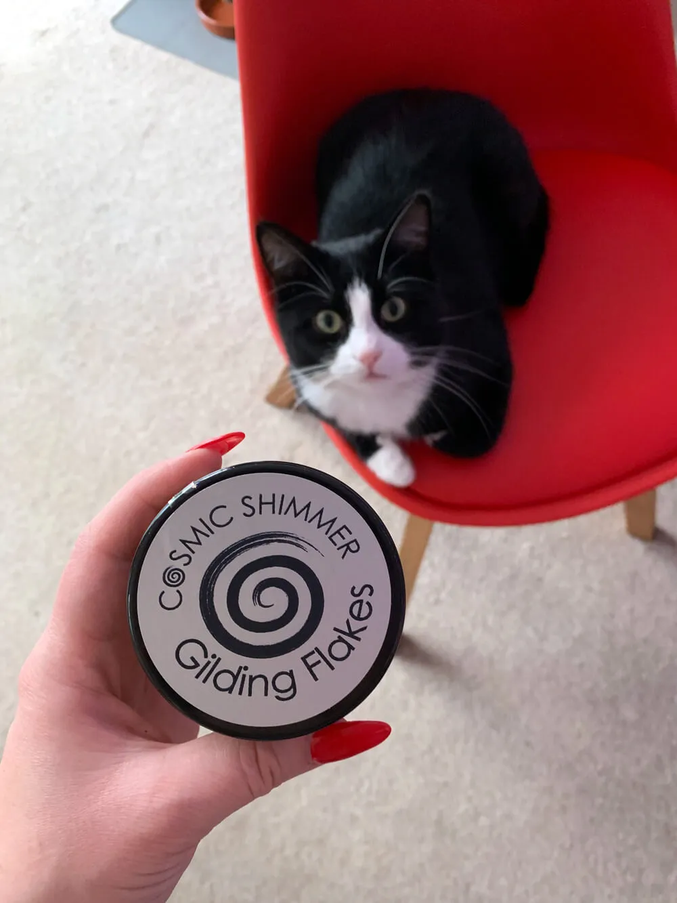

01 · Digital collage
Every world is built from royalty-free imagery, digitally altered and layered until your pet is at the centre of it. No AI, no filters, no shortcuts.
About
Cosmic Pets was created by Irina Csapo, a small independent artist. Product designer by day, cosmic designer by night.

As a creative who wears many design hats on a regular basis, I made this space for myself and my cosmic crew, so we can be maximally creative somewhere filled with joy and whimsy.
With many portraits already gone to friends and family, my mission is to create cosmic pets for other people who love, or have loved and lost, a special friend they would like to honour in a unique way.

The why
This project is inspired by my three wonderful silly cats. The love I have for them lets me create worlds of fantasy where they are the main character in their own little adventures.
The reality is, I do not know how much time I have with them here on this Earth. This is my way of honouring my wonderful furry friends while they are still here with me.
The making of
All of the artwork is done on a computer using a variety of digital tools and techniques: photo editing, retouching, mixing. Occasionally I take things further by printing and collaging the portraits by hand.

Every world is built from royalty-free imagery, digitally altered and layered until your pet is at the centre of it. No AI, no filters, no shortcuts.

For a Cosmic Magic portrait I use a mixture of gold flake application, glitter, stickers and anything else I find inspiring, applied by hand onto the A3 print.

I collage it all onto the print, sign it, frame it, and pack it up ready for its journey to your wall.




Impress your loved ones or treat yourself. I would love to hear about your pet.